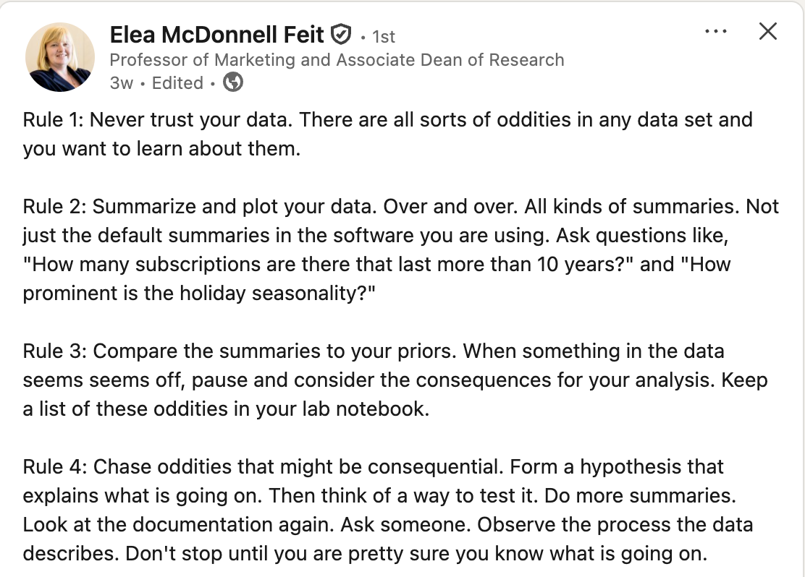
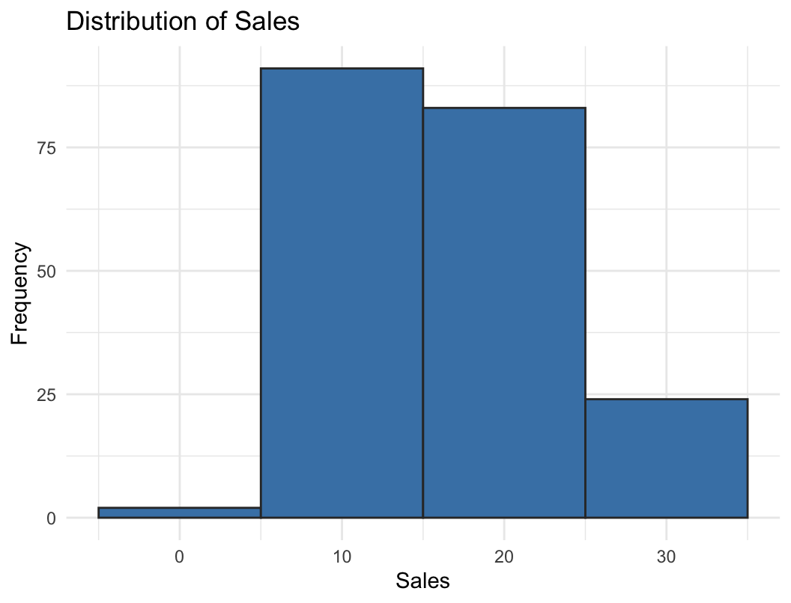
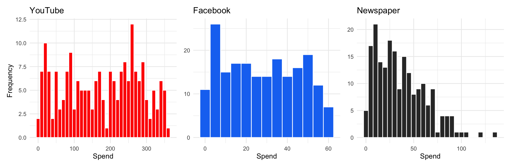
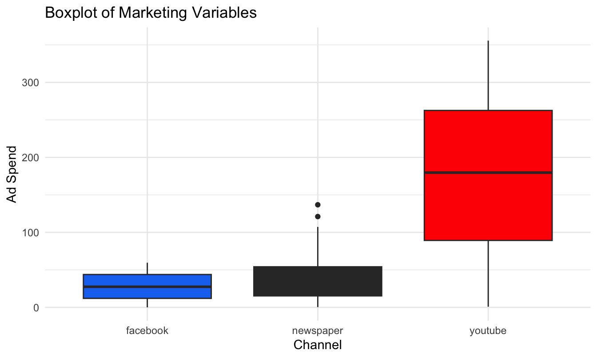
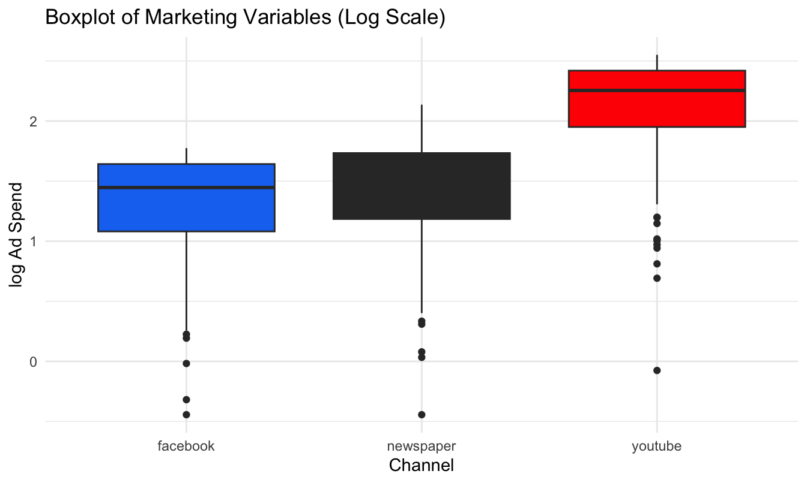
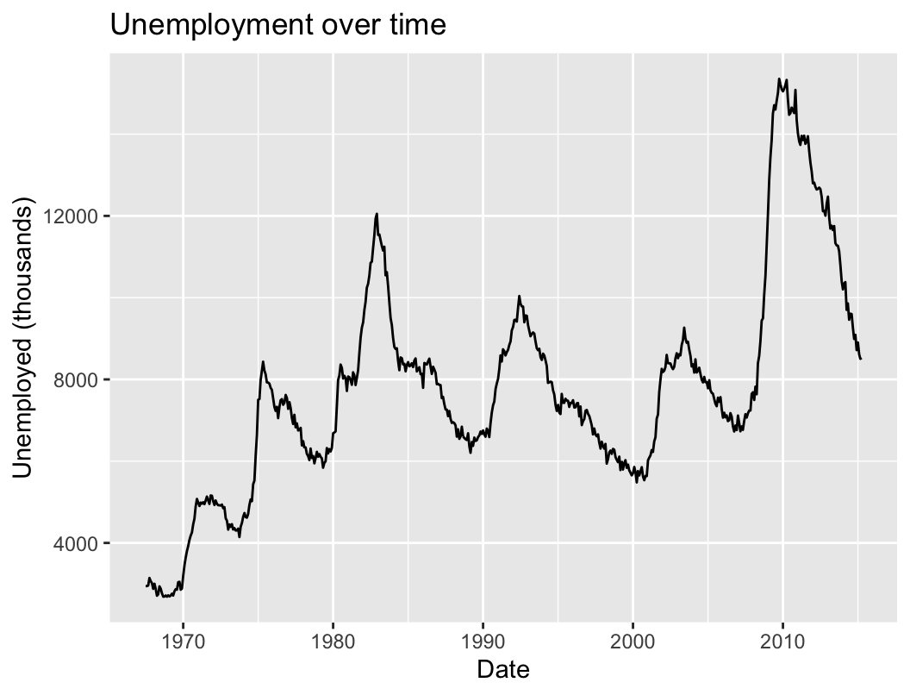
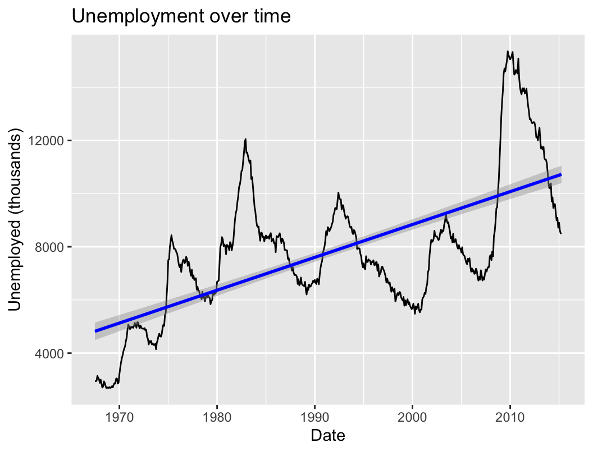
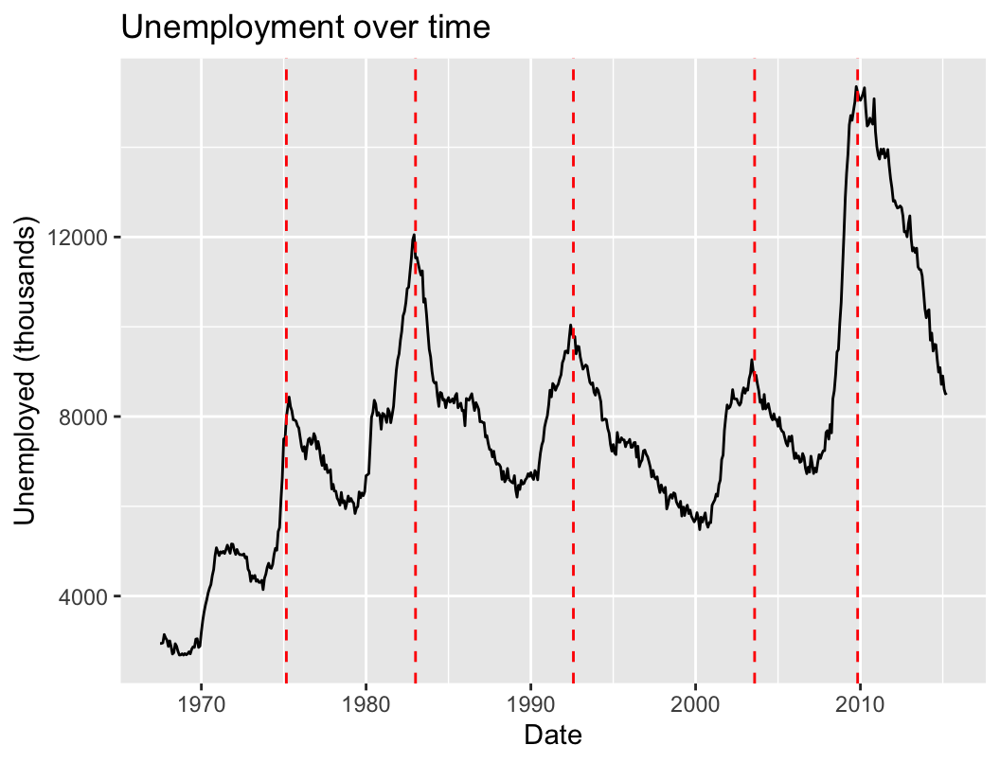

%%{init: {"themeVariables": {"fontSize": "22px"}, "flowchart": {"nodeSpacing": 35, "rankSpacing": 55, "padding": 12}}}%%
flowchart LR
A[("Raw<br/>data")] --> B["Initial<br/>EDA"]
B --> C["Data<br/>cleaning"]
C --> D[("Cleaned<br/>data")]
D --> E["Deeper<br/>EDA"]
E --> F[("Feature-rich<br/>data")]
F --> G["Final EDA<br/>& viz"]
Exploratory Data Analysis: Variation
MKT 566 · Fall 2026
Davide Proserpio
USC Marshall School of Business
What is EDA?
From charts to questions
- Last week you built the vocabulary: which chart types exist, what each is for, and how to make a figure worth showing
- This week you put them to work: using charts systematically to understand a dataset you have never seen before
- That process has a name: Exploratory Data Analysis (EDA)
Partially based on Chapter 7 of R for Data Science (this week’s required reading).
What we will learn
How to use visualization to explore your data in a systematic way:
- Generate questions about your data
- Search for answers by visualizing, transforming, and modeling your data
- Use what you learn to refine your questions and/or generate new ones
EDA goal
- Develop an understanding of your data
- The easiest way to do this is to use questions as tools to guide your investigation
- EDA is fundamentally a creative process
There is no fixed recipe: the quality of your EDA depends on the quality of the questions you ask, and each answer suggests the next question.
Start with summary statistics
Computing summary statistics is also very useful and should be done at the beginning of any analysis:
- Mean, median
- Standard deviation
- Min, max
- Number of missing values
These descriptive statistics can provide valuable insights into your data, and they are one line of R (summary(), as we will see shortly).
Data cleaning
During EDA you will perform what is called data cleaning, which involves things like:
- Finding and removing erroneous data (impossible ages, negative prices, duplicated rows)
- Deciding what to do with outliers
- Deciding what to do with missing data
Rule of thumb: you will spend far more time cleaning than modeling. Budget for it.
Feature engineering
Very often you will create new variables from existing ones. This process is referred to as feature engineering, e.g.:
- Extract the week number from a date variable
- Sum up total ad spend across all advertising channels
- Compute the cumulative average review rating for each product
The EDA workflow
- Initial EDA: spot errors, outliers, and missing data → clean them up
- Deeper EDA: uncover patterns and group effects, engineer features
The loop matters: what you find in deeper EDA often sends you back to cleaning.
The rules of EDA

R scripts for this week
In the code/ folder on the course website:
w2-1-eda-variation-class.R: reproduces every chart in today’s deckw2-1-simulate-marketing-dataset.R: generates Thursday’s case dataset,data/marketing_eda.csv(you do not need to run it)
Download everything as one zip: w2-code.zip, open the scripts in VS Code, and run along.
Thursday’s in-class case is a separate handout, and it has no starter code on purpose: you will vibecode it. More on the last slides.
How Do We Explore the Data?
Variation and covariation
- There is no rule about which questions you should ask to guide your exploration
- However, two types of questions will always be useful for making discoveries within your data:
- What type of variation occurs within my variables? (today)
- What type of covariation occurs between my variables? (next week)
What is variation?
Variation is the tendency of the values of a variable to change from measurement to measurement.
- We are interested in “within-the-same-variable” patterns
We can observe variation:
- For the same continuous variable over two different measures, e.g., temperature measured at 10 am and 4 pm
- For the same categorical variable across different “subjects”, e.g., eye color across individuals
How to visualize variation
The best way to understand patterns of variation is to visualize:
- The distribution of the variable’s values
- How the variable evolves over repeated observations (e.g., when we have repeated observations over time, i.e., panel data or time series)
We will look at both, using two datasets.
Visualizing distributions
Different charts depending on the type of variable:
| Variable type | Chart |
|---|---|
| Continuous (sales, ad spend, prices) | Histogram, density plot |
| Categorical / discrete (channel, device, star rating) | Bar chart |
And for spotting outliers: the box plot (coming up).
Visualizing Distributions
The marketing dataset
From the R library datarium: a marketing experiment with the advertising budget spent on three channels and the resulting sales.
youtube facebook newspaper sales
1 276.12 45.36 83.04 26.52
2 53.40 47.16 54.12 12.48
3 20.64 55.08 83.16 11.16
4 181.80 49.56 70.20 22.20
5 216.96 12.96 70.08 15.48
6 10.44 58.68 90.00 8.64[1] 200200 observations. Budgets (youtube, facebook, newspaper) and sales are in thousands of dollars / units.
Summary statistics first
youtube facebook newspaper sales
Min. : 0.84 Min. : 0.00 Min. : 0.36 Min. : 1.92
1st Qu.: 89.25 1st Qu.:11.97 1st Qu.: 15.30 1st Qu.:12.45
Median :179.70 Median :27.48 Median : 30.90 Median :15.48
Mean :176.45 Mean :27.92 Mean : 36.66 Mean :16.83
3rd Qu.:262.59 3rd Qu.:43.83 3rd Qu.: 54.12 3rd Qu.:20.88
Max. :355.68 Max. :59.52 Max. :136.80 Max. :32.40 One line of R. What do you notice?
Summary statistics: what they tell us
youtube facebook newspaper sales
Min. : 0.84 Min. : 0.00 Min. : 0.36 Min. : 1.92
1st Qu.: 89.25 1st Qu.:11.97 1st Qu.: 15.30 1st Qu.:12.45
Median :179.70 Median :27.48 Median : 30.90 Median :15.48
Mean :176.45 Mean :27.92 Mean : 36.66 Mean :16.83
3rd Qu.:262.59 3rd Qu.:43.83 3rd Qu.: 54.12 3rd Qu.:20.88
Max. :355.68 Max. :59.52 Max. :136.80 Max. :32.40 - No missing values in any column
facebookspend starts at zero: some campaigns skip it entirelyyoutubegets by far the largest budgetssalesvary by a factor of ~17 across campaigns
Distribution of sales

binwidth controls how wide each bar is: here each bar covers 10 units of sales.
Distribution of sales: smaller bins
Distribution of sales: too small
Binwidth: what did we just see?
binwidth = 10: too coarse. Three bars, the shape is hiddenbinwidth = 1: the shape appears: most weeks sell 10–20, with a right tail of strong weeksbinwidth = 0.1: too fine. Mostly noise
Bin width is a choice, and it changes what you see: too wide hides the shape, too narrow shows noise. Always try a few values.
Spend across the three channels

Same variable (ad spend), three channels. What do you see?
Spend across the three channels: three shapes

- YouTube: spread almost uniformly across its range
- Facebook: flat-ish, with a mode at low spend
- Newspaper: right-skewed, a few campaigns spend a lot
What can we learn from distribution charts?
- Common vs. rare values: high vs. low bars
- Shape: symmetric or skewed? One mode or several?
- Unusual patterns: gaps, spikes, values that should not exist
- Candidate outliers: bars far from the rest
The last one deserves its own tool…
Outliers
How to specifically look for outliers
Box plots (or scatter plots) are often more useful than histograms:
- Box plots automatically flag outliers using a mathematical rule
- Any point beyond 1.5 × IQR (interquartile range):
- IQR = Quartile 3 − Quartile 1
- Lower bound = Q1 − 1.5 × IQR
- Upper bound = Q3 + 1.5 × IQR
Recall from last week: the box is the middle 50% of the data, the line is the median, the whiskers reach the last point inside the bounds, and dots beyond them are flagged as outliers.
Example with ad spend

What do you see?
Example with ad spend: reading it

- Newspaper shows flagged outliers on the high side
- But the three channels live on very different scales, so the smaller ones are squashed against the axis
Example with logged ad spend

Same data, log scale. What changed?
Example with logged ad spend: reading it

- On the log scale the comparison across channels is fair
- A different picture appears: now low-spend outliers become visible too
What the log transformation does
Log makes small values more visible: it expands small values and compresses large ones.
When and why to use log:
- To handle skewed data (common in marketing: spend, sales, and clicks distributions)
- To make patterns at the low end visible when a few big values dominate
- To turn multiplicative growth into a straight line (e.g., exponential trends)
Why logs matter in EDA
- Log makes small values visible: you don’t lose them at the bottom of the plot
- It can also reveal negative outliers (very low spend, clicks, sales) that were hidden on the linear scale
- It emphasizes relative differences (ratios) instead of absolute differences: \(\log(a) - \log(b) = \log(a/b)\)
Example: sales increase from $100 to $110
- Actual % change: \(\frac{110-100}{100} = 0.10 \rightarrow\) 10%
- Using logs: \(\log(110) - \log(100) = \log(1.1) \approx 0.095 \rightarrow\) 9.5%
For small changes, a log difference is (approximately) the % change. We will use this all the time when we get to regression.
Best practice for outliers
- It’s good practice to repeat your analysis with and without the outliers
- If they have minimal effect on the results, and you can’t figure out why they’re there, it’s reasonable to replace them with missing values and move on
- If they have a substantial effect, you shouldn’t drop them without justification: figure out what caused them (e.g., a data entry error) and disclose that you removed them in your write-up
- Generally, rely on robust statistics (median over mean, quantiles over ranges)
Visualizing Trends
The economics dataset
The second way to visualize variation: how a variable evolves over time. Example with ggplot2’s economics dataset, monthly US indicators from FRED:
# A tibble: 6 × 6
date pce pop psavert uempmed unemploy
<date> <dbl> <dbl> <dbl> <dbl> <dbl>
1 1967-07-01 507. 198712 12.6 4.5 2944
2 1967-08-01 510. 198911 12.6 4.7 2945
3 1967-09-01 516. 199113 11.9 4.6 2958
4 1967-10-01 512. 199311 12.9 4.9 3143
5 1967-11-01 517. 199498 12.8 4.7 3066
6 1967-12-01 525. 199657 11.8 4.8 3018unemploy is the number of unemployed, in thousands.
Unemployment over time

A line chart is the default for time series. What patterns do you see?
Long-run direction

A fitted line summarizes the long-run directional trend: unemployment drifts up as the labor force grows.
Cycles and anomalies
ggplot(data = economics) +
geom_line(
mapping = aes(x = date, y = unemploy)
) +
labs(title = "Unemployment over time",
x = "Date",
y = "Unemployed (thousands)") +
geom_vline(
xintercept = as.Date(c(
"1975-03-01", "1983-01-01", "1992-08-01",
"2003-08-01", "2009-11-01")),
color = "red", linetype = "dashed"
)
Annotating events (here, unemployment peaks after recessions) turns a line into a story: each spike has a cause.
What can we learn from trends?
- Long-run directional trends: is the series drifting up, down, or flat?
- Seasonality & cyclicality: regular patterns that repeat (weekly, yearly, business cycles)
- Anomalies & outliers: spikes and drops that demand an explanation, often the most interesting finding in the data
In marketing: sales trends, seasonality in demand, and campaign-driven spikes are exactly these three patterns. You will look for them in every dataset you touch.
Thursday: The Variation Case
The variation case
In class on Thursday you will apply all of this to a fresh dataset: 1,000 customers of an online retailer, with age, gender, device, ad channel, ad spend, clicks, purchases, and revenue.
Here is the twist: there is no starter code. You will vibecode the whole analysis, exactly as discussed on Tuesday: you describe the chart, your AI assistant writes the R, you run it, look, refine, and you interpret.
You will answer questions like:
- Is ad spend symmetric or skewed, and what marketing strategy could create that shape?
- Is the data balanced across channels?
- Are there outliers, and should we drop them?
How the case works
The handout (w2-1-variation-case.html) takes the training wheels off gradually:
- Tasks 1–2 (look at the data, summary stats): we give you the exact prompts to paste
- Tasks 3–4: a prompt skeleton with blanks, then just a hint
- Tasks 5–7: only the goal; the prompt is yours (the last task is a question you invent)
Deliverables, both made with your assistant: an R Markdown report knitted to HTML with your charts and your written answers (the exact format you will submit for the homeworks), and your ai-log.md.
Bring your laptop Thursday, with the week 1 setup working: VS Code, an AI assistant, and R. That is all you need.
Wrap-up
Code and data to reproduce today’s charts, all on the course website:
w2-code.zip: one-click download of everything beloww2-1-eda-variation-class.R: every chart shown todayw2-1-simulate-marketing-dataset.R: generates the case datasetdata/marketing_eda.csv: the case dataset- The variation case handout: Thursday’s vibecoding exercise (bring your laptop!)
Required reading: Chapter 7 of R for Data Science. Optional: Chapters 3–5 of R for Marketing Research and Analytics.
Questions?
MKT 566 · Marketing Analytics